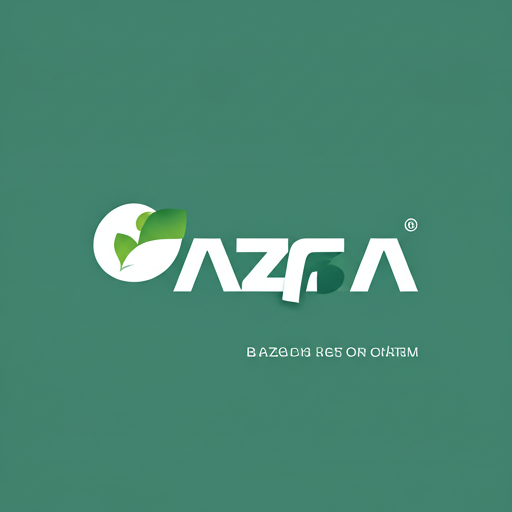

PowerBI Profile
Direct route to the live Power BI profile page currently referenced in the dashboard CTA.
Live
Power BI
Profile
open_in_new
Open Report

PowerBI Portfolio
Direct route to the currently available portfolio view with report samples.
Live
Portfolio
Showcase
open_in_new
Open Report

Retail
Performance Demo
Reserved for a future retail reporting sample with KPI, branch, and trend views.
PlaceholderRetail

HR Analytics Demo
Reserved for a future people analytics sample focused on hiring, churn, and workforce
review.
PlaceholderHR
Finance
Dashboard Demo
Reserved for a future finance sample focused on revenue, margin, and cash flow
storytelling.
PlaceholderFinance

Operations Control Tower
Reserved for a future operations sample with throughput, backlog, and service-level
signals.
PlaceholderOps